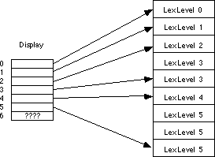

|
Table of Content | Chapter Twelve (Part 4) |
|
Table of Content | Chapter Twelve (Part 4) |
| CHAPTER TWELVE: PROCEDURES: ADVANCED TOPICS (Part 3) |
| 12.1.5 - The
Display 12.1.6 - The 80286 ENTER and LEAVE Instructions |
After reading the previous section you might get the idea that one should never use non-local variables, or limit non-local accesses to those variables declared at lex level zero. After all, it's often easy enough to put all shared variables at lex level zero. If you are designing a programming language, you can adopt the C language designer's philosophy and simply not provide block structure. Such compromises turn out to be unnecessary. There is a data structure, the display, that provides efficient access to any set of non-local variables.
A display is simply an array of pointers to activation
records. Display[0] contains a pointer to the most recent activation record
for lex level zero, Display[1] contains a pointer to the most recent
activation record for lex level one, and so on. Assuming you've maintained the Display
array in the current data segment (always a good place to keep it) it only takes two
instructions to access any non-local variable. Pictorially, the display works as shown
below:

Note that the entries in the display always point at the most recent activation record for a procedure at the given lex level. If there is no active activation record for a particular lex level (e.g., lex level six above), then the entry in the display contains garbage.
The maximum lexical nesting level in your program determines how many elements there must be in the display. Most programs have only three or four nested procedures (if that many) so the display is usually quite small. Generally, you will rarely require more than 10 or so elements in the display.
Another advantage to using a display is that each individual procedure can maintain the display information itself, the caller need not get involved. When using static links the calling code has to compute and pass the appropriate static link to a procedure. Not only is this slow, but the code to do this must appear before every call. If your program uses a display, the callee, rather than the caller, maintains the display so you only need one copy of the code per procedure. Furthermore, as the next example shows, the code to handle the display is short and fast.
Maintaining the display is very easy. Upon initial entry
into a procedure you must first save the contents of the display array at the current lex
level and then store the pointer to the current activation record into that same spot.
Accessing a non-local variable requires only two instructions, one to load an element of
the display into a register and a second to access the variable. The following code
implements the Outer, Middle, and Inner procedures
from the static link examples.
; Assume Outer is at lex level 1, Middle is at lex level 2, and
; Inner is at lex level 3. Keep in mind that each entry in the
; display is two bytes. Presumably, the variable Display is defined
; in the data segment.
Outer proc near
push bp
mov bp, sp
push Display[2] ;Save current Display Entry
sub sp, 2 ;Make room for I.
mov word ptr [bp-4],1 ;Set I to one.
call Middle
add sp, 2 ;Remove local variables
pop Display[2] ;Restore previous value.
pop bp
ret
Outer endp
Middle proc near
push bp ;Save dynamic link.
mov bp, sp ;Set up our activation record.
push Display[4] ;Save old Display value.
sub sp, 2 ;Make room for J.
mov word ptr [bp-2],2 ;J := 2;
mov bx, Display[2] ;Get static link to prev LL.
mov ax, ss:[bx-4] ;Get I's value.
add ax, [bp-2] ;Add to J and then
puti ; print the sum.
putcr
call Inner
add sp, 2 ;Remnove local variable.
pop Display[4] ;Restore old Display value.
pop bp
ret
Middle endp
Inner proc near
push bp ;Save dynamic link
mov bp, sp ;Set up activation record.
push Display[6] ;Save old display value
sub sp, 2 ;Make room for K.
mov word ptr [bp-2],2 ;K := 3;
mov bx, Display[4] ;Get static link to prev LL.
mov ax, ss:[bx-4] ;Get J's value.
add ax, [bp-2] ;Add to K
mov bx, Display[2] ;Get ptr to Outer's Act Rec.
add ax, ss:[bx-4] ;Add in I's value and then
puti ; print the sum.
putcr
add sp, 2
pop Display [6]
pop bp
ret
Inner endp
Although this code doesn't look particularly better than the former code, using a display is often much more efficient than using static links.
12.1.6 The 80286 ENTER and LEAVE Instructions
When designing the 80286, Intel's CPU designers decided to add two instructions to help maintain displays. Unfortunately, although their design works, is very general, and only requires data in the stack segment, it is very slow; much slower than using the techniques in the previous section. Although many non-optimizing compilers use these instructions, the best compilers avoid using them, if possible.
The leave instruction is very simple to
understand. It performs the same operation as the two instructions:
mov sp, bp
pop bp
Therefore, you may use the instruction for the standard
procedure exit code if you have an 80286 or later microprocessor. On an 80386 or earlier
processor, the leave instruction is shorter and faster than the equivalent
move and pop sequence. However, the leave instruction is slower on 80486 and
later processors.
The enter instruction takes two operands. The
first is the number of bytes of local storage the current procedure requires, the second
is the lex level of the current procedure. The enter instruction does the
following:
; ENTER Locals, LexLevel
push bp ;Save dynamic link.
mov tempreg, sp ;Save for later.
cmp LexLevel, 0 ;Done if this is lex level zero.
je Lex0
lp: dec LexLevel
jz Done ;Quit if at last lex level.
sub bp, 2 ;Index into display in prev act rec
push [bp] ; and push each element there.
jmp lp ;Repeat for each entry.
Done: push tempreg ;Add entry for current lex level.
Lex0: mov bp, tempreg ;Ptr to current act rec.
sub sp, Locals ;Allocate local storage
As you can see from this code, the enter
instruction copies the display from activation record to activation record. This can get
quite expensive if you nest the procedures to any depth. Most HLLs, if they use the enter
instruction at all, always specify a nesting level of zero to avoid copying the display
throughout the stack.
The enter instruction puts the value for the display[n]
entry at location BP-(n*2). The enter instruction does not copy
the value for display[0] into each stack frame. Intel assumes that you will keep the main
program's global variables in the data segment. To save time and memory, they do not
bother copying the display[0] entry.
The enter instruction is very slow, particularly on 80486 and later processors. If you really want to copy the display from activation record to activation record it is probably a better idea to push the items yourself. The following code snippets show how to do this:
; enter n, 0 ;14 cycles on the 486
push bp ;1 cycle on the 486
sub sp, n ;1 cycle on the 486
; enter n, 1 ;17 cycles on the 486
push bp ;1 cycle on the 486
push [bp-2] ;4 cycles on the 486
mov bp, sp ;1 cycle on the 486
add bp, 2 ;1 cycle on the 486
sub sp, n ;1 cycle on the 486
; enter n, 2 ;20 cycles on the 486
push bp ;1 cycle on the 486
push [bp-2] ;4 cycles on the 486
push [bp-4] ;4 cycles on the 486
mov bp, sp ;1 cycle on the 486
add bp, 4 ;1 cycle on the 486
sub sp, n ;1 cycle on the 486
; enter n, 3 ;23 cycles on the 486
push bp ;1 cycle on the 486
push [bp-2] ;4 cycles on the 486
push [bp-4] ;4 cycles on the 486
push [bp-6] ;4 cycles on the 486
mov bp, sp ;1 cycle on the 486
add bp, 6 ;1 cycle on the 486
sub sp, n ;1 cycle on the 486
; enter n, 4 ;26 cycles on the 486
push bp ;1 cycle on the 486
push [bp-2] ;4 cycles on the 486
push [bp-4] ;4 cycles on the 486
push [bp-6] ;4 cycles on the 486
push [bp-8] ;4 cycles on the 486
mov bp, sp ;1 cycle on the 486
add bp, 8 ;1 cycle on the 486
sub sp, n ;1 cycle on the 486
; etc.
If you are willing to believe Intel's cycle timings, you
can see that the enter instruction is almost never faster than a straight
line sequence of instructions that accomplish the same thing. If you are interested in
saving space rather than writing fast code, the enter instruction is
generally a better alternative. The same is generally true for the leave instruction as
well. It is only one byte long, but it is slower than the corresponding mov bp,sp
and pop bp instructions.
Accessing non-local variables using the displays created by
enter appears in the exercises.
|
Table of Content | Chapter Twelve (Part 4) |
Chapter Twelve: Procedures: Advanced
Topics (Part 3)
27 SEP 1996